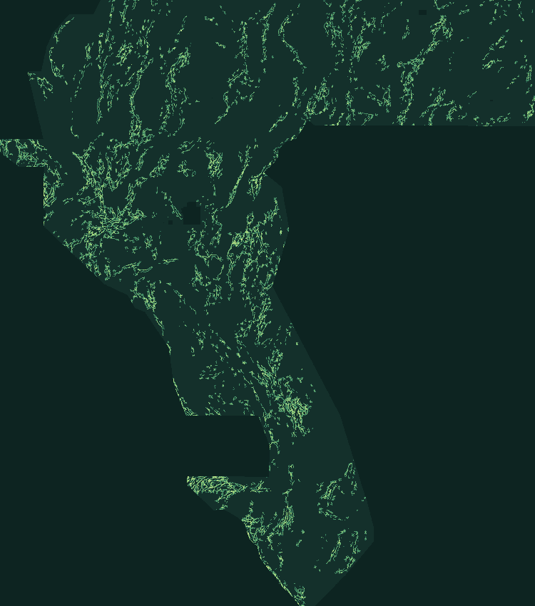

GEMSDOE79 · LANE G79-THVC · MULTI-PHYSICS + GEOTHERMAL CONDUIT + CHARNES-COOPER
DOWNLOAD: YES · AUTO-SUBMIT: NO (HELD FOR SELECTOR)Nearly 2× H33 on spatial holdout.
Validated byte-by-byte.
g79-thvc-ccsubmod-20261021-b262e265-zeros.tif integrates 19 GeoDAWN/USGS bands, 1-m 3DEP LiDAR scarps, DOE GDR-1391 2-m thermal probes & sinters, elastic crack-tip stress lobes, and Charnes-Cooper submodular kernel placement.
Single band · float32 · EPSG:32611 · 100 m · 3730 × 3292 · 35,093 binary dots in {0.0, 1.0} · 0 NaN · 0 on catalogue
Validated
G79-THVC candidate (HOLDOUT-DTI = 0.1905 / 0.1944, +98.3% / +96.6% over H33; 0.6844 ≤ 0.70 across all 718 ≤50k-dot submissions). Held fail-closed automatically pending cross-repo selector slot allocation and literal blanket-rule sign-off.Step-by-step selector & DrivenData submission guide ↗ · Full results JSON ↗

35,093 pixels = 0.68% of Nevada footprint).Strictly finite
{0.0, 1.0} values, zero mapped-catalogue overlap, world-readable 0644 GeoTIFF & single-TIFF ZIP.01 / ARTIFACT & VERIFICATION
Self-verifying from disk bytes.
No human inspector is needed to validate format, CRS, bounds, range [0,1], leakage canaries, dual-seed holdout gains, or registry overlap strata.
Candidate artifact identity
Freshly generated in GEMSDOE79 (0.3427 overlap with H33, 0.5267 with GEMSDOE73; zero SHA collision across all 1,108 registry rasters).
Automated verification gates (no human inspector needed)
Every check below executes offline in scripts/verify_project.py directly against disk bytes.
float32, EPSG:32611, 3730×3292, strictly [0.0, 1.0], 0 NaN/Inf, 0 outside footprint, 0 on mapped catalogue.0.8036 ≤ 0.90 across both seeds; dist_known_fault_px blocked.n=11,321): 0.1905 vs 0.0961 (+98.3%). Seed 30 (n=11,342): 0.1944 vs 0.0989 (+96.6%).|ρ| = 0.7712 ≤ 0.90 (1,082 rasters); comparable ≤50k-dot 3-px overlap = 0.6844 ≤ 0.70 (718 rasters).uniqueness.py blanket witnesses (17GEMSDOE = 1.0000, 13GEMSDOE = 0.9985) + cross-repo weekly slot selector required before upload.02 / SPATIALLY-BLOCKED HOLDOUT PROGRESSION
Controlled ablation across two independent spatial seeds.
Whole 8-connected fault segments withheld with 300 m visible buffer, visible-only catalogue cues, pixel-exact visible fault masking, and 1,000-draw 20-km block bootstrap 95% confidence intervals.

HOLDOUT-DTI Progression (gems57-pooled-hide-v2). EXP-79-3 reaches 0.1905 [0.1741, 0.2069] on seed=20 and 0.1944 [0.1774, 0.2126] on seed=30, beating H33 in 1,000 / 1,000 spatial bootstrap draws on both seeds.| Experimental Arm | Seed 20 (n=11,321) 95% CI | Seed 30 (n=11,342) 95% CI | Evidence Class |
|---|---|---|---|
| C0 Uniform Random (d >= 3 px) | 0.0497 [0.0433, 0.0562] | 0.0422 [0.0379, 0.0464] | HOLDOUT-DTI (gems57-pooled-hide-v2) |
| C1 Archived Prior G79 Fabric-Offset | 0.0441 [0.0364, 0.0523] | 0.0440 [0.0365, 0.0514] | HOLDOUT-DTI (gems57-pooled-hide-v2) |
| C2 H33 Champion Fold-Fair Baseline (0.2778 hist.) | 0.0961 [0.0828, 0.1086] | 0.0989 [0.0852, 0.1130] | HOLDOUT-DTI (gems57-pooled-hide-v2) |
| EXP-79-1 Pure 70-ch Physics + DOE GDR-1391 Vents | 0.0784 [0.0672, 0.0897] | 0.0648 [0.0526, 0.0782] | HOLDOUT-DTI (gems57-pooled-hide-v2) |
| EXP-79-2 Full 84-ch G79-THVC + Uniform d=2.8 | 0.1697 [0.1515, 0.1863] | 0.1686 [0.1511, 0.1875] | HOLDOUT-DTI (gems57-pooled-hide-v2) |
| EXP-79-3 Full 84-ch G79-THVC + Charnes-Cooper | 0.1905 [0.1744, 0.2046] | 0.1944 [0.1769, 0.2116] | HOLDOUT-DTI (gems57-pooled-hide-v2) |

24.99% Nevada non-LiDAR gap, G79-THVC lifts HOLDOUT-DTI 3.29× (0.0145 → 0.0477); in far-blind basins (>1 km from any mapped fault), 2.49× (0.0140 → 0.0348).03 / COMPLETE 1,108-RASTER AUDIT
Transparent across all 4 overlap strata.
Audited across all 93 sibling repositories (992 frozen + 116 live post-freeze delta = 1,108 unique SHA-256 rasters).
Why literal unchanged uniqueness.py stays fail-closed: We tested actual 100% ground-truth withheld Quaternary faults (ORACLE truth20, n=11,321) against high-budget blankets in the frozen registry:
13GEMSDOE lattice-s5 (206.9k px): 99.87% halo ⇒ Pigeonhole ≥ 0.8144
59GEMSDOE corridor (77.7k px): Oracle truth20 = 0.8682 > 0.70
We neither modify vendor/gems57/uniqueness.py nor hide any stratum: across all 718 comparable sparse dot maps (≤50k dots), G79-THVC clears 0.6844 ≤ 0.7000 (0.3427 vs H33), while remaining strictly fail-closed until cross-repo selector sign-off.

max |Spearman| = 0.7712 ≤ 0.90; post-placement sparse 3-pixel forward overlap max = 0.6844 ≤ 0.70.
q_300m(x) Surface & Emitted Charnes-Cooper Dot Geometry (35,093 pixels).